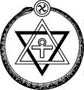

USKONTO
OPPIMATERIAALIA NETISSÄ VUODESTA 1999 LÄHTIEN
PSYKOLOGIAN PIKALINKIT
PSYKAN VIDEOABIKURSSI:
PS7 ABI KERTAUSKURSSI
(OPS 2016-):
PS1 Psyykkinen toiminta ja oppiminen
PS2 Kehittyvä ihminen
PS3 Tietoa käsittelevä ihminen
PS4 Tunteet, psyykkinen hyvinvointi ja mielenterveys
PS5 Yksilöllinen ja yhteisöllinen ihminen
Uskonto:
UE1 UE2
UE3 UE4
UE5 UE6
Filosofia:
FI1 FI2
FI3 FI4
FI5

Synkretistiset uskonnot ovat sellaisia, joissa on vaikutteita useista eri uskontokunnista (esim. hindulaisuus, buddhalaisuus, kristinusko, islam tai juutalaisuus, joskus jopa vanhemmistakin, kuten Egyptin ja Mesopotamian uskonnoista). Teosofian symbolista on löydettävissä näitä vanhoja kuvia, kuten risti, svastika eli auringonkehrä (joka on hindulaisuuden vanhoja symboleja), itsensä syövä käärme jne.
SUOMEN USKONNOLLINEN KENTTÄ
(linkit sivustoni teksteihin):
SUURIMPIA:
Suomen evankelis-luterilainen kirkko
Suomen ortodoksinen kirkko
Suomen helluntaiherätys
Islam
Jehovan todistajat
Suomen Vapaakirkko
Katolinen kirkko Suomessa
Suomen Adventtikirkko
Mormonit
MUITA KRISTILLISIÄ OSIN RYHMITELTYNÄ:
Pelastusarmeija
Anglikaanit
Baptismi
Metodismi
Evankelikaalisia
Karismaattisia
Muita luterilaisia ja kristillisiä
MUITA USKONNOLLISIA YHTEISÖJÄ OSIN RYHMITELTYNÄ:
Krist.vaikutteisia
Buddhalaisuus
Juutalaisuus
Hindulaisperäisiä
Synkretistisiä
Muita
|
Synkretistisiä uskontoja ja uususkontoja Suomessa
Suomen Teosofisen Seuran kotisivu
Ruusu-Risti ry:n kotisivu
Kristisofia -sivusto
Suomen Antroposofisen Liiton kotisivu
Steinerkasvatuksen liitto ry:n kotisivu
Ihmisyyden Tunnustajien kotisivu
Uusi Aika - uuden ajan elämänviisauden yhteisö
Ultra-lehden kotisivu
Bahai-yhteisön kotisivu
Scientologian kotisivu (engl.)
• ANTROPOSOFIA
- Huomautus! Jos löydät tässä luvussa negatiivista korostusta, johtuu se siitä, että kirjoitin osion pohjatekstin 1990-luvun aivan alussa, jolloin olin tutustunut steinerilaisuuteen ja itselläni oli aika negatiivinen käsitys siksi, että antroposofia ja koulujärjestelmä pyrki peittelemään uskontoaan julkisuudelta (kuten tekee nykyisinkin). Pyydänkin tähän osioon mieluusti korjausehdotuksia ja lisäksi tutustumaan esim. steinerpedagogiikkaan steinerkoulujen omalta nettisivulta (ks. yllä)
- Rudolf Steiner irtautui teosofiasta (1910-l)
- itävalt. syntyinen Steiner (1861-1925) perusti 1913 Antroposofisen seuran ja 1923 Yleisen antroposofisen seuran
- Steiner esiintyi Goethen tutkijana ja julkaisi 1904 Theosophie-teoksen. Erosi myöhemmin teosofiasta ottaen käyttöön antroposofia-nimityksen
- antroposofiassa korostaa ns. hengentiedettä
- karttoi puhumasta uskonnoista, ja halusi pitää näkemystään maailmankatsomuksena ja kulttuuriliikkeenä; kuitenkin kirjoja, joissa uskonto selkeästi teemana: Jälleensyntyminen ja kohtalo, Jeesuksesta Kristukseen, Viides evankeliumi.
- Korostaa ihmisen kykyä kehittyä (luovuus, henkistyminen)
- kirjassaan Jälleensyntyminen ja kohtalo, Steiner korostaa jälleensyntymistä antroposofian keskeisimmäksi asiaksi
- kristinusko on harhaoppia, jossa Kristusta ei ole koskaan ymmärretty oikein
- Steiner korosti kirjassaan: "Niiden, jotka nimittävät itseänsä antroposofeiksi, on tehtävä voitavansa, jotta reinkarnaatio (jälleensyntyminen) jäsentyisi ihmismieliin lapsuudesta lähtien"
- STEINER-PEDAGOGIIKKA ja koulut: steiner-pedagogiikkaa pidetään luovana, lapsen koko persoonallisuutta kehittävänä kasvatusmenetelmänä
- tutkimusten mukaan tavallisessa suomalaisessa peruskoulussa saadut kasvatustulokset vastaavat steinerkoulujen tasoa
- Steinerkoulujen vauhdittajana Suomessa on toiminut Jyväskylän yliopiston emeritusprofessori Reijo Wilenius (s.1930)
- Steinerkoulujen opettajat eivät ole aina pitäneet siitä, että antroposofiaa on pyritty tuomaan voimakkaasti mukaan koulun toimintaan. Opettajat ovat halunneet pitää koulun lähellä kaikkia suomalaisia eikä niinkään korostaa antroposofista maailmankatsomusta. Steinerkouluissa mm. annetaan luterilaisille lapsille oman luterilaisen uskonnon mukaista uskonnonopetusta.
- Suomessa on vähän yli 20 steinerkoulua
- Suomessa steinerkoulujen opettajat (luokanopettajat) saavat koulutuksensa sekä 1980 perustetussa helsinkiläisessä Henkisen Kasvun Snellman -korkeakoulussa, joka on uskonnollisella antroposofisella pohjalla, että normaalissa yliopistokoulutuksessa
- Suomessa Steinerkouluissa on oppilaita tällä hetkellä 4862 (2012)
- sen sijaan varsinaisen Suomen Antroposofisen Liitto ry:n jäseniä on maassamme vain 780 (2011)
- julkaisu: Takoja ja Kirjokansi -lehdet
- harjoitetaan biodynaaminen viljely eli luonnonmukainen viljely
- usko jälleensyntymiseen
- keskeisimpiä asioita antroposofiassa; uskotaan myös Karman lain vaikutuksiin
- Steiner opetti myös, että jumalat asuvat planeetoilla, jaAurinko, Maa ja Kuu ovat jumalia.
- Steiner harjoitti astrologiaa ja horoskooppeja (Steinerin mukaan mm. Jeesus toteutti täysin oman horoskooppinsa).
- Steinerin ihmiskuvaan kuuluvat: fyysinen ruumis, eetteriruumis, astraali eli sieluruumis, henkiminä, elämänhenki ja henki-ihminen.
- tunnettu suomalainen laulaja ja mm. Katri-Helenan ja Jari Sillanpään laulujen tekijä Jukka Kuoppamäki on vihitty antroposofian pappi
• SUOMEN BAHAI-YHDYSKUNTA
- Iranin siialaisuudesta 1840-l syntynyt
- perustaja Bahaullah
- perustana ns. Bab-liike, jonka johtajana oli Siyyid Ali Muhammad Shirazi (1819-50); mm. ottivat uudet nimet, naisilta poistettiin huntu (IRANISSA), mutta Bab (Shirazi) teloitettiin 1850 ja monet liikkeen johtajat joutuivat vankeuteen.
- mm. Mirzá Husayan Ali (1817-92) joutui vankilaan. Hän kertoi Jumalan ilmestyneen hänelle vankilassa ja kutsuneen hänet julistamaan maailmalle uuden ilmoituksen. Sai nimekseen BAHAULLAH. Tästä alkoi varsinainen bahailaisuus.
- Bahaullahin seuraaja Abdu'l-Bahá (Kirkkauden Palvelija, k. 1921) levitti oppia mm. P-Amerikkaan ja Eurooppaan.
- Ylin hallintoelin: Yleismaailmallinen Oikeusneuvosto (International Bahai Council), joka sijaitsee Haifassa ja Akkossa Israelissa.
- ei pappeja eikä rituaaleja paitsi avioliittoon vihkiminen ja hautaus.
- pyrkimys yleismaailmallisen poliittisen, sosiaalisen ja uskonnollisen rauhanvaltakunnan luomiseen, jossa olisi yksi uskonto, yksi kulttuuri ja yksi kansainvälinen apukieli (uskontona olisi luonnollisesti bahai).
- oppi: pyrkii yhdistämään koko ihmiskunnan (mm. yhteinen kieli)
- monoteisteja - yksi Jumala on luonut luomakunnan ja ohjaa sen kehitystä. Jumaluus on läsnä kaikkialla luomakunnassa.
- Jumaluuden ilmentymiä maailmassa ovat olleet Nooa, Aabraham, Mooses, Jeesus, Muhammed ja Bab sekä huipentumana Bahaullah.
- kaikki uskonnot edustavat samaa jumaluutta, mutta vasta bahaismissa kaikki uskonnot kokevat täyttymyksensä.
- Koraani Raamattua luotettavampi kirja. Koraanin jumalallinen alkuperä on jokaisen bahain hyväksyttävä.
- Bahait käyttävät aurinkovuoteen perustuvaa kalenteria,jossa on 19 kuukautta ja kuukaudessa 19 vuorokautta. Ajanlaskun alkuna katsotaan Babin julistus vuonna 1844 e.Kr.
- Suomessa Bahai-liikkeen toiminta alkoi jo niinkin varhain kuin 1938, uskonto rekisteröityi nimellä Suomen Bahai-yhdyskunta vuonna 1963
- liike toimii järjestäytyneenä parilla kymmenellä paikkakunnalla.
- jäseniä Suomessa 560 (v. 2011)
• SUOMEN SCIENTOLOGIA-YHDISTYS RY.
- kritisoitu enemmän kuin juuri mitään muuta liikettä historiassa!
- pidetään yhtenä vaarallisimmista uskonnoista, koska liikkeeseen kiedotut jäsenet ajautuvat usein miljoonavelkoihin ja itsemurhiin
- Ron Hubbard (1911-1986) perusti Yhdysvalloissa 1950-l
- "Scientology Church" rekisteröityi Kaliforniassa 1954, tämä kirkko on edelleen "äitikirkkona".
- nykyisin n. 100 000-300 000 aktiivijäsentä maailmassa, Yhdysvalloissa Scientologit väittivät mm. 2000-luvulla, että heidän kannattajiaan olisi pelkästään siellä 3,5 miljoonaa. Vuoden 2001 tutkimus osoitti kuitenkin, että Scientologian koki uskonnokseen vain 55000 amerikkalaista, ja vuonna 2008 enää vain 25000.
- Hubbard kirjoitti kirjan "Dianetics The Modern Science of Mental Health" (1950). Julkaistu myös suomeksi, "Dianetiikka - Nykyajan tiede mielenterveydestä" Kirjaa mainostetaan mm. jaetuilla monisteilla seuraavasti: Mikä estää ihmistä olemasta oma itsensä? Kuinka voi saavuttaa tasapainoisuuden ja antoisan elämän? Mistä tulevat estomme ja mitä voimme tehdä niille? Kykenet ratkaisemaan ongelmia, kun tiedät miten mieli toimii. Dianetiikka kirja on kirjoitettu tätä päämäärää varten ja se puoltaa näkökantaa, että ihmisen älyä ja ajattelukykyä voidaan kehittää. Kirjasta käy ilmi, että on mahdollista itse tehdä jotain asioille, jotka aiheuttavat pelkoa, häveliäisyyttä, väsymystä,
stressiä ja sairauksia - ilman, että käytetään mielenlääkkeitä tai hypnoosia. Kirjan menetelmä on johdonmukaisesti rakennettu ja sitä on helppo kokeilla. Se ei vaadi kumartamaan auktoriteeteille, vaan sinä voit ottaa sen käyttöön perusteellisen läpilukemisen jälkeen auttaaksesi itseäsi ja ystäviäsi."
- esikuvina Sigmund Freud, Aristoteles, Buddha, Kungfutse, Jeesus, Muhammed ja Laotse
- Psyykkisiä tekniikkoja markkinoidaan tienä onneen, ns. dianektiikka
- dianetiikan ideana on vapauttaa ihminen menneisyyden traumaattisista kokemuksista, muistikuvista eli engrammeista. Pyrkimyksenä tila "clear" eli selkeyden tila, johon kuuluu korkea ja luova älykkyys, rentoutuneisuus jne.
- ihmisen kuolematon henki tai sielu, "thetan", vapautuu jälleensyntymisen pyörästä, jonka vankina se on ollut miljoonien vuosien ajan.
- dianetiikassa käytetään apuna E-mittaria, joka muistuttaa valheenpaljastuskonetta, ja tämän avulla pyritään löytämään ihmisessä vielä henkistymistä estävät voimat ja negatiiviset muistikuvat; E-mittarin hinta on ollut 2010-luvulla Yhdysvalloissa halvimmasta 900 dollarin mittarista parhaimpiin 5000 dollarin mittareihin (ko. peltirasian voi tutkijoiden mukaan rakentaa n. 30 eurolla). E-mittaria ei voi kuka tahansa hankkia, sillä se on papillinen väline, jota auditoija käyttää.
- liike mainostaa itseään tieteellisenä
- mikäli dianetiikasta kiinnostuneella henkilöllä on varaa maksaa esim. 7000-8000 euroa, niin hän pääsee ns. operoitavaksi thetaniksi. S:n mukaan me ihmiset olemme kymmeniä
miljardeja vuosia sitten tälle planeetalle materian vangiksi jääneitä thetaneja, avaruuden kuningasmieliä.
- thetaneina meille on kaikki mahdollista (kunhan kehitämme itseämme). Esimerkiksi voimme irtautua ruumiista ja tehdä matkoja ulkoavaruudessa
- liike on ajanut jäseniä vararikkoon korkeiden kurssihintojen takia sekä ns. ristiintakausten takia (kirkon jäseneksi pyrkivät taanneet toistensa lainoja ns. ristiin) ja itsemurhiin > tästä johtuen paljon oikeusprosesseja ympäri maailmaa scientologa vastaan
- liikkeelle etsitään jäseniä mm. ilmaisten persoonallisuustestien avulla (mm. netistä löytyy), samoin huumevalistustyön (ennen ainakin sellainen kuin Narconon) kautta
- SUOMESSA: 1978, jolloin Tukholman SC järjesti kutsukokoukset Intercontinentalissa ja Rakennusmestareiden talolla Helsingissä. Marraskuussa 1978 Hotelli Intercontinentalissa Dianetiikka-kirjan julkistamistilaisuus.
- Suomen Scientologia-yhdistys perustettiin 1980 ja rekisteröitiin 1983
- yhdistykseen kuuluu n. 120 jäsentä (2012), sen yhteydessä ollut kuitenkin yli 1000 suomalaista.
- S-kirkkoa julkisuudessaa markkinoinut Suomessa mm. Susan Toivonen
- ei edellytetä entisestä uskontokunnasta eroamista.
- Suomessa on annettu joitakin tapauksia Keskusrikospoliisin tutkittavaksi. Arvellaan, että ainakin 400 ihmistä on Suomessa ajautunut n. 170 000 euron velkoihin
Scientologia-yhdistyksen vuoksi. He ovat ottaneet lainaa omia kurssimaksujaan varten ja lisäksi ns. ristiintaanneet muiden scientologian harrastajien kursseja.
- maailmalla on kuuluisuutta niittäneet mm. seuraavat scientologeiksi tunnustautuneet julkkikset (v. 2009): Tom Cruise (näyttelijä), Chick Corea (muusikko), Pricilla Presley (näyttelijä, Elvis Presleyn entinen vaimo), John Travolta (näyttelijä)
• TEOSOFIA
- PERUSTAJAT Helena Blavatsky (1831-91) sekä am. eversti Henry Steel Olcott
- johto siirtyi Intiaan, Bombayhin (1879) ja sieltä Madrasiin 1882.
- aluksi pyritiin yhdistämään Teosofinen Seura ja hindulainen uudistusjärjestö Arya Samaj
- Blavatsky omaksui lähinnä buddhalaisia vaikutteita, myöhempi johtaja Annie Besant hindulaisia vaikutteita
- JUURET hindulaisuudessa, buddhalaisuudessa, Egyptin ja antiikin okkultismissa
- taustalla myös gnostilaisuutta ja uusplatonismia sekä juutalaisuutta ja kristinuskoa
- maailmankatsomus monistinen, spiritualistinen ja evolutiivinen
- ihmisen tehtävä kehittyä kohti yhä korkeampia henkisiä maailmoja jälleensyntymien kautta.
- SUOMEN TEOSOFINEN SEURA 1907 (jäseniä nyk. n. 460 vuonna 2007)
- Annie Besantin vaikutusta (sosialistina tunnettu, sai siksi jalansijaa Suomessa)
- Suomen Teologinen Seura sai vaikutteita alkuperäisestä Adyarin teosofisesta liikkeestä
- kurssikeskus Kreivilän Matkussa
- Kalevalan asema keskeinen
- pyrkimyksenä: 1) muodostaa ihmiskunnan yleisen veljeyden ydin huolimatta rodun, uskontunnustuksen, sukupuolen, yhteiskuntaluokan tai ihonvärin eroavuudesta, 2) antaa virikkeitä vertailevan uskontotieteen, filosofian ja luonnontieteiden tutkimiseen, 3) tutkia luonnon selvittämättömiä lakeja ja ihmisen piileviä voimia (Heino, s. 242)
- Julkaisu: Teosofi (sekä muuta teosofista kirjallisuutta)
- JAKAUTUMINEN: Ruusu-Risti ry. (1920) > Kristosofia (1940)
- Teosofinen Seura jakautunut kymmeniin eri liikkeisiin, joista tärkeimpiä:
- Steinerin antroposofia (irtautui 1910-luvulla)
- Idän Tähden Järjestön (perust. 1910) hajaantuminen (1920-l.)
- SUOMESSA:
• 1) KRISTOSOFINEN KIRJALLISUUSSEURA RY.
- tärkeimpiä opettajia ovat olleet Pekka Ervast (1875-1934) ja J.R. Hannula (1873-1956)
- kristosofia pohtii elämää kokonaisvaltaisesti aina luonnon laeista moraalikysymyksiin ja ihmisenä olemisen tarkoitukseen.
- jälleensyntymisoppi on keskeistä, kuten koko teosofisessa liikkeessä. Hindulaisuudesta poiketen ihmisyyteen kehittynyt sielu ei voi opin mukaan enää palata alemmalle tasolle, kuten eläimeksi.
- Hannulan mukaan maailman kolme suurta Valoa ovat Buddha, Kristus ja Ervast
- toimintaa etenkin Helsingissä, Jyväskylässä, Lahdessa, Oulussa, Porissa, Tampereella, Turussa
- julkaisseet mm. Pekka Ervastin, J.R. Hannulan ja Blavatskyn kirjoja.
- Kristosofi -lehti
• 2) IHMISYYDEN TUNNUSTAJAT
- vuonna 1978 Martta Horjander (1930-2009) perusti Kaavin Ahosenniemelle teosofisen yhteisön, jonne kertyi ryhmä nuoria kristosofian kannattajia
- vuokrasivat Mikko Niskaselta Konginkankaan Käpykolon, Käpykolosta muuttivat Vilppulaan ns. Väinölä -yhteisöksi vanhainkotiin
- nykyisin 46 jäsentä (2011) mm. Väinölä-yhteisössä ja muutamassa muussa kodissa (Toukola ja Sampola).
- perustuu Pekka Ervastin ja J.R. Hannulan opetuksiin
- yhteisössä pyritään elämään Ervastin kokoamien vuorisaarnan viiden peruskäskyn mukaan:
1) ÄLÄ SUUTU - HYVYYS, 2) ÄLÄ AJATUKSISSASIKAAN OLE EPÄPUHDAS - PUHTAUS, 3) ÄLÄ VANNO - TOTUUS, REHELLISYYS, 4) ÄLÄ OLE PAHAA VASTAAN - RAUHALLISUUS, 5) ÄLÄ SODI, VAAN RAKASTA KAIKKIA IHMISIÄ - RAKKAUS
- julkaisu: Väinämöinen
• 3) RUUSU-RISTI RY.
- perustaja Pekka Ervast (1875-1934)
- hylkäsi Annie Besantin näkemyksen Krishnamurtista Maailmanopettajana
- OHJELMA:
"1. Ruusu- Risti on totuudenetsijäin järjestö, jonka jäsenet tunnustaen kaikkien ihmisten veljeyden katsomatta rotuun, ihonväriin, kansallisuuteen, uskontunnustukseen,
yhteiskunnalliseen asemaan, sukupuoleen tai muihin ulkonaisiin rajoituksiin osoittavat toisilleen mitä suurinta suvaitsevuutta ja ymmärtämystä sekä pitävät totuutta
korkeampana kaikkia uskontoja.
2. Ruusu-Risti on vapaan ajattelun pyhäkkö, jonka jäsenet etsivät totuuden ydintä, salaista jumalviisautta, mikä piilee kaikkien aikojen uskonnoissa, mytologioissa, filosofioissa ja tieteellisissa järjestelmissä.
3. Ruusu-Risti on renkaana ihmisten näkymättömässä veljeskunnassa ja sen jäsenet etsivät ikuiseen elämään vievää tietä, joka kasvattaa ja kehittää ihmisissä veljeyden henkeä." (Heino, s. 244)
- Ervast piti kristinuskoa kehittyneimpänä uskontona.
- Jeesus Kristus tunnustetaan tärkeäksi ihmiskunnan opettajaksi, mutta kristinuskoon kuuluvaa sovitusuhrioppia ei hyväksytä. Jeesus on näin esikuvallinen ihminen ja armeliaisuudessaan.
- tunnustaa jälleensyntymisen ja karman lain (edustaa Blavatskya)
- Kalevala -tutkimus
- väittävät, että Nikaian (tai Konstantinopolin) kirkolliskokousten uskontunnustuksista olisi poistettu jälleensyntymisoppi! Tälle väitteelle ei ole löydetty mitään historiallista pohjaa.
- Päämaja Helsingissä, toinen temppeli Jyväskylässä.
- n. 276 jäsentä (2007)
- Ruusu-Ristin Kirjallisuusseura julkaisee Pekka Ervastin kirjoja sekä Ruusu-Risti -nimistä "totuuden etsijäin aikakausikirjaa". Kirjakauppa "Kirjokansi" Helsingissä.
|